Tienda online de zapatillas exclusivas · Sneaker Factory
El proyecto se presenta desde el trabajo realizado por el equipo: funciones, decisiones técnicas, configuración, pruebas y comprobaciones. Todos los datos de personas, clientes y pedidos son ficticios.
KALMA SNKRS, también denominada Sneaker Factory, es una tienda online de zapatillas Nike exclusivas para particulares. La aplicación permite consultar un catálogo organizado por modelos, colores, tallas y existencias, realizar pedidos con opciones de personalización y seguir su estado. Además, incorpora un área interna para administrar productos, controlar el almacén, gestionar pedidos y consultar informes y auditoría.
El proyecto se ha desarrollado como trabajo intermodular de 2.º DAW y une dos módulos: Desarrollo Web en Entorno Servidor (la aplicación PHP, su API y su base de datos) y Despliegue de Aplicaciones Web (contenedores, proxy HTTPS, despliegue, copias y restauración).
| Entregable | Dónde está |
|---|---|
| Repositorio con el código del backend, recursos, scripts de base de datos y datos ficticios | app/, config/, public/, database/schema.sql, database/seeds/,
database/migraciones/, docker/ y scripts/ |
| Documento técnico: arquitectura, esquema E/R, permisos, decisiones, seguridad, incidencias y capturas | Este documento (docs/KALMA_SNKRS_Memoria_Tecnica.pdf) y docs/diagrama-er.md |
| Especificación de la API con al menos 12 rutas y ejemplos de petición y respuesta | Apartado 6; docs/contrato-integracion.md (punto 9, las 45 rutas de la API) y
docs/pruebas/ejemplos-api.md (27 ejemplos reales sobre 19 rutas) |
| Colección de pruebas con resultados esperados y obtenidos, con errores y usuarios sin permiso | postman/ (176 pruebas, 375 comprobaciones) y docs/pruebas/resultados-coleccion.md (apartado 10) |
README de instalación e integración, .env.example sin secretos y evidencia del despliegue común |
README.md, README-DESPLIEGUE.md, docs/KALMA_Despliegue_Aula.md, .env.example y apartado 12 |
David Rojas · David Moreno · Estefanía Correa
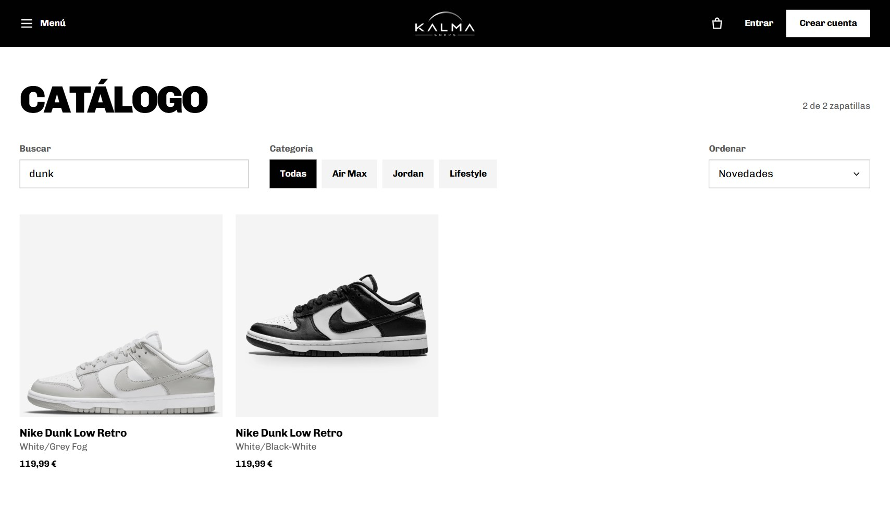
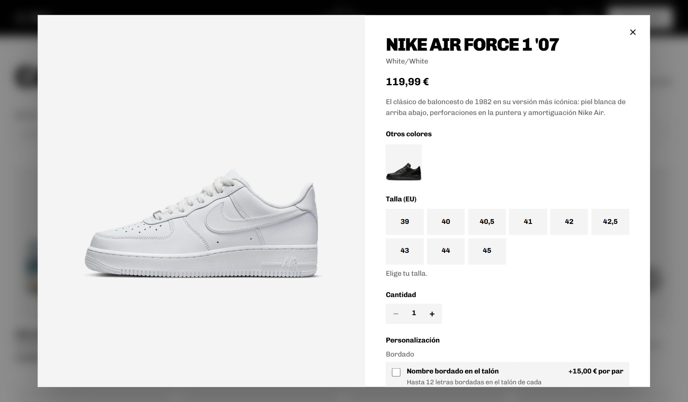
| Estado o acción | Comportamiento | Quién lo hace |
|---|---|---|
| Pendiente | Pedido creado; el stock ya está descontado y espera la confirmación del pago. | Cliente (al crear el pedido) |
| Confirmado | Pago confirmado; el pedido pasa a la cola del almacén. | Administración |
| Preparación | El almacén prepara los artículos. | Almacén o administración |
| Enviado | Se exige un código de seguimiento único. | Almacén o administración |
| Entregado | Fin del flujo; el pedido ya no cambia. | Almacén o administración |
| Cancelado | Solo desde pendiente o confirmado; el stock se repone una sola vez. | Cliente (sus pedidos) o administración |
Cada transición queda en historial_estados_pedido con el estado anterior, el nuevo, quién lo hizo y cuándo.
Una transición no permitida (por ejemplo, de pendiente a preparación sin confirmar el pago) responde 409.
| Tipo | Opciones | Regla |
|---|---|---|
| Packaging | Caja edición KALMA, caja de coleccionista (la caja de madera grabada está desactivada) | Una por línea |
| Bordado | Nombre bordado en el talón, hasta 12 letras | Solo en modelos personalizables (no Air Max ni Jordan) |
| Cordones | Cordones de repuesto negros, blancos o rojos | Una por línea |
| Certificado | Certificado de autenticidad | Una por línea |
El recargo es por par. El servidor comprueba que la opción esté activa, que el modelo admita el bordado y que el texto respete el límite, y calcula el recargo con los datos del catálogo, nunca con los que envía el navegador.
La aplicación se ejecuta en tres contenedores. El navegador solo habla con el proxy Nginx, que termina la conexión HTTPS, sirve los recursos estáticos y reenvía las peticiones dinámicas a Apache con PHP. La aplicación se comunica con PostgreSQL mediante PDO a través de una red interna de Docker a la que el proxy no tiene acceso.
| Capa | Tecnología | Responsabilidad |
|---|---|---|
| Interfaz | HTML, CSS y JavaScript | Presentación, interacción y peticiones a la API con fetch. |
| Proxy inverso | Nginx 1.27 Alpine | HTTPS, redirección de HTTP, recursos estáticos, límites de peticiones y reenvío a la aplicación. |
| Aplicación | PHP 8.3 + Apache, sin framework | Router, middlewares, controladores, servicios con las reglas de negocio y repositorios. |
| Persistencia | PostgreSQL 17 | Almacenamiento relacional, restricciones, índices, triggers y transacciones. |
| Ejecución | Docker Compose | Construcción de las imágenes y coordinación de los servicios, redes y volumen. |
Navegador ──► Nginx (TLS, límites) ──► public/index.php (front controller)
└─► Router (config/rutas.php y config/rutas/*.php)
└─► Middlewares: sesión → CSRF → [límite de peticiones] → [Autenticado] → [RequierePermiso]
└─► Controlador (lee la petición, construye la respuesta)
└─► Servicio (reglas de negocio, transacciones, auditoría)
└─► Repositorio (SQL con PDO y consultas preparadas) ──► PostgreSQL
Por ejemplo, cuando una clienta crea un pedido (POST /api/pedidos), los middlewares comprueban la sesión,
el token CSRF y el permiso pedidos.propios. Después, el servicio abre una transacción, bloquea las tallas con
SELECT … FOR UPDATE, comprueba el stock y la personalización con los datos del catálogo, inserta el pedido y sus
líneas, descuenta el stock dejando su movimiento, guarda el primer estado del historial y registra la auditoría. Si
cualquier paso falla, se hace ROLLBACK y no queda nada a medias. La respuesta es 201 Created con
Location: /api/pedidos/SF-2026-000025.
| Directorio | Contenido |
|---|---|
public/ | Punto de entrada único (index.php), hojas de estilo, JavaScript e imágenes. |
app/Nucleo/ | Router, petición, respuesta, conexión, validación, paginación, formato de fechas, CSV y gestión de errores y logs. |
app/Middlewares/ | Sesión, CSRF, autenticación, permisos y límites de peticiones. |
app/Seguridad/ | Matriz de permisos por rol, gestión de la sesión y limitador de peticiones. |
app/Controladores/ | Controladores de las páginas (Web/) y de la API (Api/; Api/Gestion/ para el área interna). |
app/Servicios/ | Reglas de negocio: pedidos y su máquina de estados, catálogo, stock, albaranes, informes, perfil y exportación. |
app/Repositorios/ | Acceso a PostgreSQL, solo con consultas preparadas. |
app/vistas/ | Plantillas HTML de las páginas y sus partes comunes. |
config/ | Tabla de rutas, con un archivo por módulo en config/rutas/. |
database/ | Esquema, datos de demostración y migraciones. |
docker/ y scripts/ | Imagen y plantilla de Nginx; scripts de despliegue, comprobación, copia, restauración y cron. |
postman/ y docs/ | Colección de pruebas y su entorno; documentación técnica, diagramas y resultados de las pruebas. |
La aplicación usa Composer solo para la carga automática de clases (PSR-4, App\ → app/). No depende de
un framework: el MVC y los componentes principales son propios. La imagen de la aplicación se construye en dos etapas: la
primera genera el autoload con Composer y la final solo contiene PHP con Apache, la extensión pdo_pgsql, la
configuración de producción de PHP (sin mostrar errores ni la versión) y el código.
La persistencia se hace en PostgreSQL 17 con 17 tablas, agrupadas según las funciones de la tienda. El modelo se presenta en dos niveles: el modelo conceptual (figura 4), con las entidades y sus relaciones, y el esquema relacional (figura 5), con las tablas, sus claves y sus restricciones.
| Área | Tablas | Uso |
|---|---|---|
| Usuarios | roles, usuarios, clientes | Cuentas, perfiles de cliente y roles. |
| Catálogo | categorias, marcas, colores, productos, variantes, opciones_personalizacion | Modelos, colores, tallas, stock y opciones. |
| Pedidos | pedidos, lineas_pedido, linea_personalizacion, historial_estados_pedido | Cabeceras, líneas, personalización y estados. |
| Inventario | movimientos_stock | Cada cambio de existencias con su stock resultante. |
| Control | auditoria, consultas, limites_peticiones | Trazabilidad, formulario de contacto y límites de uso. |
Se usa la notación de Chen con cardinalidades mínimas y máximas. La pareja que hay junto a cada entidad indica cuántas ocurrencias de esa entidad se relacionan con una ocurrencia de la entidad del otro extremo. En CLIENTE —realiza— PEDIDO, el (1,1) junto a CLIENTE dice que cada pedido es de un solo cliente, y el (0,N) junto a PEDIDO, que un cliente puede tener ninguno o muchos pedidos.
linea_personalizacion.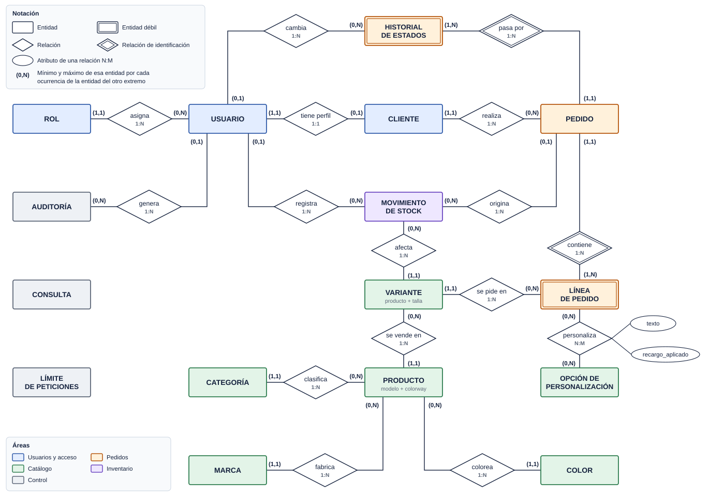
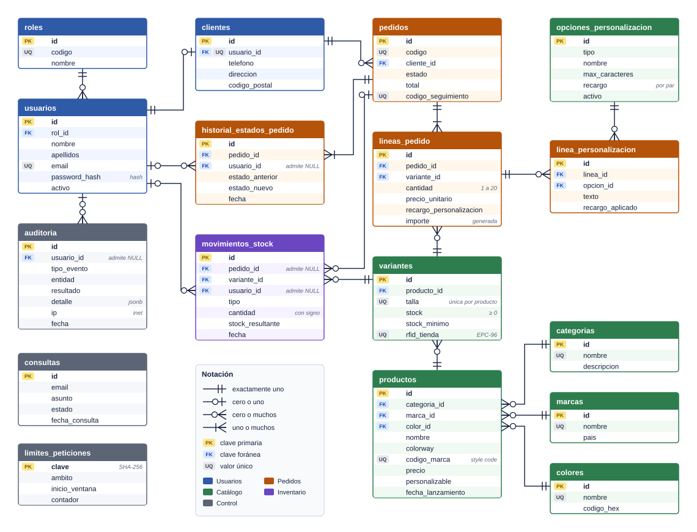
database/schema.sql.| En el modelo conceptual | En el esquema relacional |
|---|---|
| Relación 1:N (por ejemplo, CLIENTE realiza PEDIDO) | Clave foránea en la tabla del lado N (pedidos.cliente_id). |
| Relación 1:1 USUARIO tiene perfil CLIENTE | Clave foránea con UNIQUE en clientes.usuario_id. |
| Cardinalidad mínima 0 en el lado 1 (registra, origina, cambia, genera) | Clave foránea que admite NULL con ON DELETE SET NULL. |
| Entidad débil (LÍNEA DE PEDIDO, HISTORIAL DE ESTADOS) | Clave foránea NOT NULL con ON DELETE CASCADE hacia pedidos. |
| Relación N:M personaliza, con atributos | Tabla linea_personalizacion con dos claves foráneas, UNIQUE (linea_id, opcion_id), texto y recargo_aplicado. |
| Cardinalidad mínima 1 en PEDIDO contiene LÍNEA | No se puede expresar con una restricción de tabla: la exige el servicio al crear el pedido. |
GENERATED ALWAYS AS IDENTITY, claves foráneas, restricciones UNIQUE (también compuestas: talla por producto, código de estilo por marca, variante por pedido) y CHECK (estados, tipos, formatos, rangos).CHECK (stock >= 0) en las variantes: es la última defensa contra la sobreventa.importe de cada línea es una columna generada (cantidad × (precio_unitario + recargo_personalizacion)), así que nunca se desincroniza.fecha_actualizacion en cada UPDATE; las fechas son TIMESTAMPTZ.SELECT … FOR UPDATE, así que dos compras simultáneas no pueden vender la misma unidad.Con el volumen vacío, PostgreSQL ejecuta en orden 01_schema.sql, 02_usuarios.sql,
03_catalogo.sql y 04_pedidos.sql. Las semillas calculan el stock, los totales y el historial a partir de
pocas filas y, al final, comprueban que todo cuadra; si no cuadra, la carga se aborta. Los cambios posteriores se
aplican con migraciones (database/migraciones/) que scripts/deploy.sh ejecuta una sola vez cada una,
dentro de una transacción y con un bloqueo, registrándolas en migraciones_aplicadas sin perder los datos del volumen.
codigo_marca no es rfid_tiendaproductos.codigo_marca | variantes.rfid_tienda | |
|---|---|---|
| Qué es | Código de estilo (style code) real de Nike | Etiqueta RFID (EPC-96) que pone KALMA |
| Ejemplo | CW2288-111 = modelo CW2288 + color 111 | 4B4C4D… (24 caracteres hexadecimales) |
| Nivel | Modelo + color (igual en todas las tallas) | Cada talla |
| Unicidad | UNIQUE (marca_id, codigo_marca) | UNIQUE en toda la tabla |
La aplicación ofrece una API REST con respuestas JSON bajo /api/* (45 rutas) y un endpoint
/health para comprobar la aplicación y la base de datos. Las páginas HTML (11 rutas) se sirven desde las rutas
web y consultan la API con fetch. La especificación completa de cada ruta (parámetros, cuerpo, permisos y
códigos de respuesta) está en el punto 9 de docs/contrato-integracion.md, y
docs/pruebas/ejemplos-api.md recoge 27 ejemplos reales de petición y respuesta.
Éxito: {"datos": ...}
Listado: {"datos": [...], "paginacion": {"pagina": 1, "por_pagina": 12, "total": 30, "paginas": 3}}
Error: {"error": {"codigo": 409, "mensaje": "...", "detalles": {...}}}
| Área | Rutas | Permiso |
|---|---|---|
| Sistema y sesión | GET /health · GET /api · GET /api/sesion · POST /api/registro · POST /api/login · POST /api/logout | Público / sesión |
| Catálogo y contacto | GET /api/productos · GET /api/productos/{slug} · GET /api/catalogo/filtros · GET /api/lanzamientos · POST /api/consultas | Público |
| Cliente | GET, PATCH /api/perfil · GET, POST /api/pedidos · GET /api/pedidos/{codigo} · POST /api/pedidos/{codigo}/cancelar | Cliente |
| Pedidos (interno) | GET /api/gestion/pedidos · GET /api/gestion/pedidos/{codigo} · PATCH /api/gestion/pedidos/{codigo}/estado | Almacén y admin |
| Stock | GET /api/gestion/stock · PATCH /api/gestion/variantes/{id}/stock · GET /api/gestion/variantes/{id}/movimientos | Almacén y admin |
| Albaranes | GET /api/gestion/albaranes · GET …/albaranes/detalle · POST /api/gestion/albaranes (solo admin) · GET …/albaranes/avisos (solo admin) | Almacén y admin |
| Catálogo interno | GET, POST /api/gestion/productos · GET, PATCH, DELETE /api/gestion/productos/{id} | Admin |
| Informes y control | GET /api/gestion/resumen · GET /api/gestion/informes/{nombre} · GET /api/gestion/auditoria · GET /api/gestion/exportar/pedidos · GET, PATCH /api/gestion/consultas · GET /api/usuarios | Admin |
| Informes de stock | GET …/informes-stock/vista-previa (y /csv) · GET, POST /api/gestion/informes-stock · GET …/{id} (y /csv) · PATCH …/{id}/revisado | Almacén envía; admin revisa |
POST, PATCH o DELETE lleva la cabecera X-CSRF-Token, que se obtiene en GET /api/sesion y cambia al iniciar sesión.?pagina y ?por_pagina (máximo 50). Las fechas van en ISO 8601 con zona horaria.400 datos no válidos (con el motivo de cada campo), 401 sin sesión, 403 sin permiso o CSRF falso, 404 inexistente o ajeno, 405 método no permitido, 409 conflicto con el estado, 413/415 cuerpo demasiado grande o de otro tipo, 429 demasiadas peticiones y 500 error interno con una referencia.Petición de la colección de pruebas (prueba 36). El cuerpo incluye a propósito un precio_unitario: 1, que el servidor ignora.
POST /api/pedidos
Content-Type: application/json
X-CSRF-Token: <token de la sesión>
{"notas": "Pedido de prueba desde Postman",
"lineas": [{"variante_id": 1, "cantidad": 2, "precio_unitario": 1, "personalizacion": [{"opcion_id": 1}]},
{"variante_id": 2, "cantidad": 1, "personalizacion": [{"opcion_id": 4, "texto": "LUCIA"}]}]}
Respuesta 201 Created con Location: /api/pedidos/SF-2026-000025 (recortada):
{"datos": {"codigo": "SF-2026-000025", "estado": "pendiente", "personalizado": true, "total": 398.97,
"lineas": [{"producto": "Nike Air Force 1 '07", "talla": 39.0, "cantidad": 2, "precio_unitario": 119.99,
"recargo_personalizacion": 12.0, "importe": 263.98, "personalizacion": [{"nombre": "Caja edición KALMA"}]},
{"producto": "Nike Air Force 1 '07", "talla": 40.0, "cantidad": 1, "precio_unitario": 119.99,
"recargo_personalizacion": 15.0, "importe": 134.99, "personalizacion": [{"texto": "LUCIA"}]}],
"historial": [{"estado_anterior": null, "estado_nuevo": "pendiente", "rol": "cliente"}]}}
Si se piden más unidades de las que hay, la respuesta es 409 e indica la talla y lo disponible:
{"error": {"codigo": 409, "mensaje": "No hay stock suficiente para alguna de las tallas",
"detalles": {"sin_stock": [{"linea": 0, "variante_id": 1, "producto": "Nike Air Force 1 '07 White/White",
"talla": 39.0, "solicitado": 10, "disponible": 9}]}}}
Los roles están en la tabla roles (con clave foránea desde usuarios) y lo que puede hacer cada uno
se define en la matriz de app/Seguridad/Permisos.php. Cada ruta protegida exige un permiso con el middleware
RequierePermiso; sin sesión responde 401 y sin permiso, 403, y el acceso denegado queda en la auditoría.
| Permiso | Qué permite | Admin | Almacén | Cliente |
|---|---|---|---|---|
panel.acceder | Entrar en el área interna (/panel) | ✓ | ✓ | |
pedidos.ver_todos | Ver los pedidos de todos los clientes | ✓ | ✓ | |
pedidos.cambiar_estado | Logística: preparación, enviado y entregado | ✓ | ✓ | |
pedidos.confirmar_cancelar | Confirmar el pago o cancelar desde el área interna | ✓ | ||
stock.gestionar | Consultar y ajustar el stock de las tallas | ✓ | ✓ | |
albaranes.ver | Ver los albaranes cargados y su detalle | ✓ | ✓ | |
productos.gestionar | Alta, edición y desactivación de productos; cargar albaranes | ✓ | ||
informes_stock.enviar | Generar informes de stock y enviarlos a administración | ✓ | ✓ | |
informes_stock.revisar | Ver todos los informes de stock y marcarlos como revisados | ✓ | ||
informes.ver | Panel resumen e informes de ventas | ✓ | ||
auditoria.ver | Consultar la auditoría | ✓ | ||
datos.exportar | Exportar pedidos en CSV o JSON | ✓ | ||
consultas.gestionar | Ver y responder las consultas de contacto | ✓ | ||
usuarios.gestionar | Listar usuarios y gestionar cuentas | ✓ | ||
pedidos.propios | Crear, ver y cancelar sus propios pedidos | ✓* | ✓ | |
perfil.propio | Ver y editar sus propios datos | ✓* | ✓ |
Administración tiene todos los permisos ('*'). * Los pedidos y el perfil propios exigen
además, en el servicio, que la cuenta sea de cliente. Que un pedido sea del cliente que lo pide no lo decide la matriz,
sino el servicio de pedidos: un pedido ajeno responde 404, igual que uno inexistente, y queda en la auditoría.
| Riesgo | Medida | Comprobado en |
|---|---|---|
| Inyección SQL | Consultas preparadas reales (PDO::ATTR_EMULATE_PREPARES = false); filtros y ordenación eligen entre fragmentos fijos. | Prueba 24 (400) |
| XSS | Las vistas escapan toda salida con htmlspecialchars; la API responde JSON con X-Content-Type-Options: nosniff. | Revisión del código |
| CSRF | Token por sesión obligatorio en toda petición que modifica datos; cookie SameSite=Lax. | Prueba 25 (403 CSRF) |
| Robo de sesión | Cookie HttpOnly y Secure con HTTPS; identificador regenerado al autenticar; caducidad a los 30 minutos sin actividad. | Configuración de Sesion.php |
| Contraseñas | password_hash (bcrypt); el tiempo de respuesta es el mismo exista o no el email. | Prueba 12 (401) |
| Fuerza bruta | Límites en Nginx (30 peticiones por minuto en el acceso) y en PHP: por IP y por cuenta e IP (5 intentos cada 15 minutos), en limites_peticiones con hashes. | Prueba 26 (429 con Retry-After) |
| Acceso indebido | Matriz de permisos comprobada en el servidor con middlewares; los accesos denegados se auditan. | 21 pruebas 401/403 |
| IDOR | El servicio comprueba que el pedido es del cliente; si no, 404. | Prueba 31 (404) |
| Manipulación de precios | El servidor recalcula precios, recargos y total; importe es una columna generada. | Prueba 36 (201) |
| Sobreventa concurrente | Transacción con SELECT … FOR UPDATE y CHECK (stock >= 0). | Prueba 33 (409) |
| Fuga de información | Mensajes genéricos sin trazas; el error 500 da una referencia que se busca en el log. | Formato de error común |
| Fórmulas en CSV | Las celdas que empiezan por =, +, - o @ se neutralizan al exportar. | Prueba 122 |
| Incrustación y rastreo | Cabeceras X-Frame-Options: DENY, X-Content-Type-Options: nosniff y Referrer-Policy: same-origin. | Todas las respuestas |
| Exposición de la BD | PostgreSQL solo está en la red interna back y no publica el puerto 5432. | Apartado 11 |
| Datos personales | No se guarda el DNI; la auditoría y los logs no guardan contraseñas, tokens ni cookies. | Prueba 120 |
| Transporte | HTTPS obligatorio con TLS 1.2 y 1.3; HTTP redirige a HTTPS conservando la ruta. | Apartado 13 |
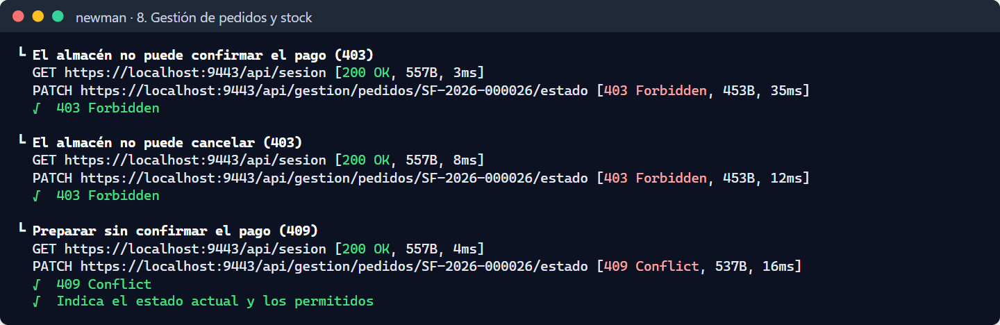
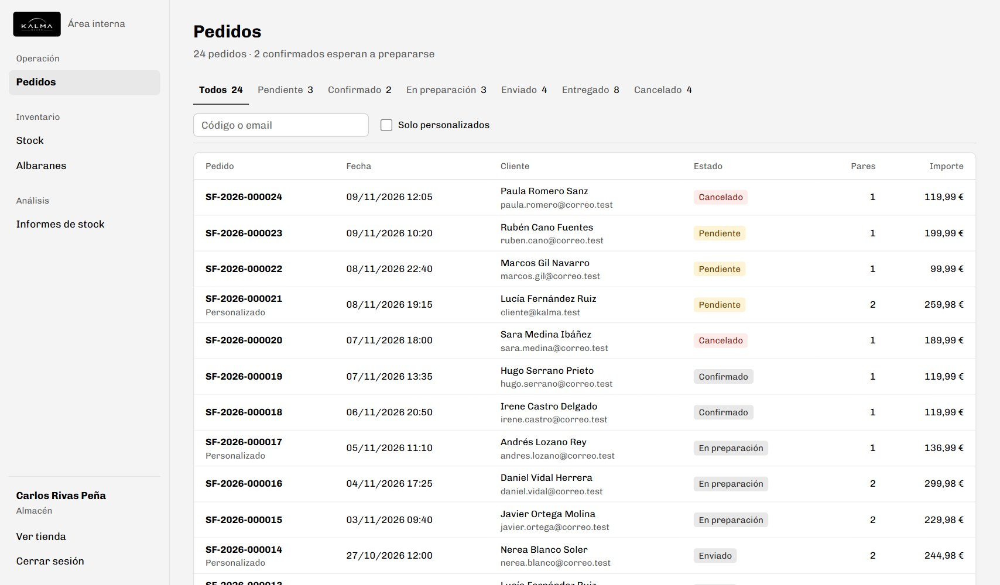
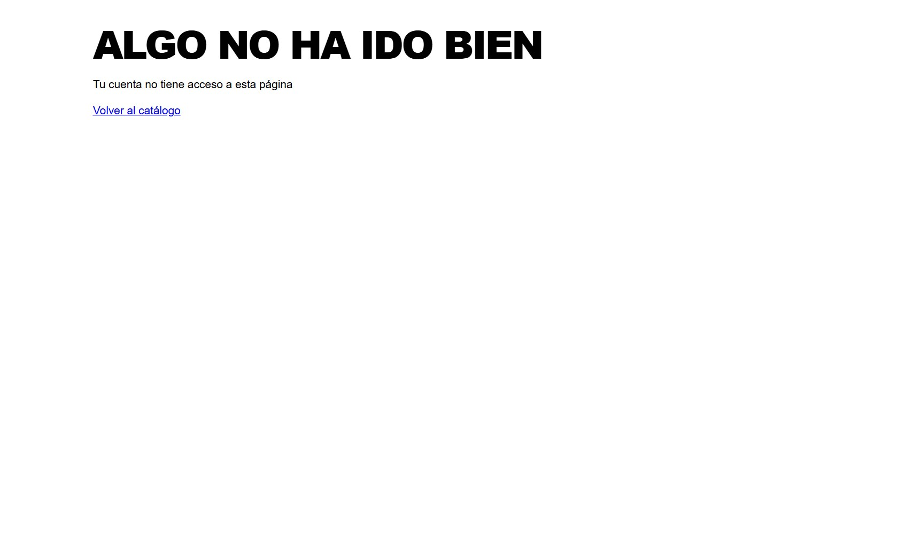
/panel: el servidor responde 403 con una página de error sin detalles internos.| Decisión | Motivo | Alternativa descartada |
|---|---|---|
| PHP sin framework con MVC propio: controlador → servicio → repositorio | Cada capa tiene una responsabilidad y las reglas de negocio quedan en los servicios, fáciles de revisar y probar. | Laravel o Symfony |
| Sesiones nativas de PHP con cookie y token CSRF | La web y la API comparten origen; cerrar sesión invalida el acceso al momento. | Tokens JWT |
| Producto = modelo + colorway; variante = producto + talla | Como en Nike.com, cada colorway tiene su código, su precio y su foto; el stock se lleva por talla. | Un producto por modelo con los colores como atributo |
codigo_marca (style code real) distinto de rfid_tienda (EPC-96 por talla) | Identifican niveles distintos: el modelo y color, frente a cada talla del almacén. | Un único código |
usuarios separado de clientes (1:1) y sin DNI | El personal no deja columnas vacías; el DNI no hace falta para vender ni enviar (minimización de datos). | Una sola tabla de personas |
| Roles en tabla; matriz de permisos en PHP | Añadir un rol no cambia el esquema y la matriz se revisa junto al código que la usa. | Tabla de permisos en la BD |
Stock numérico en variantes y cada cambio en movimientos_stock | Consultar el stock es inmediato y cada unidad que entra o sale queda trazada con su motivo. | Calcular el stock sumando movimientos |
| Las líneas copian nombre, talla, color y precio | El pedido refleja lo que se compró aunque el catálogo cambie después. | Leer siempre del producto |
| El almacén solo lleva la logística; administración confirma el pago y cancela | Separación de funciones: quien prepara los pedidos no decide sobre los cobros. | Todos los empleados con los mismos permisos |
| Albarán en CSV solo para administración; se rechaza entero si una fila está mal y uno repetido exige aceptación expresa | El inventario nunca queda a medias ni se suma dos veces la misma entrega por error. | Carga parcial con un archivo de errores |
Informes de stock y albaranes guardados en auditoria | Mantener el modelo en 17 tablas; cada envío y revisión ya es un evento auditable. | Tablas propias |
Imágenes por convención: public/img/productos/<código>.webp | Sin subidas de archivos ni un volumen extra que respaldar. | Subida desde el panel |
Lanzamientos con productos.fecha_lanzamiento | Se anuncian en la portada, pero no salen en el catálogo ni se pueden pedir hasta su fecha. | Tabla aparte |
| Bloqueo de login por cuenta e IP | Quien conozca un email no puede dejar fuera a su dueño, que entra desde otra IP. | Bloqueo solo por cuenta |
Cesta en localStorage; el servidor recalcula todo al pedir | La cesta no necesita estado en el servidor y no se confía en los importes del navegador. | Cesta guardada en la BD |
| Nginx delante de Apache y PostgreSQL en una red interna | TLS, estáticos y límites fuera de PHP; la base de datos no es accesible desde fuera. | Publicar Apache directamente |
La parte pública es una tienda en blanco y negro centrada en el producto. El catálogo permite localizar modelos
con búsqueda y filtros, y la ficha muestra lo necesario antes de añadir una talla a la cesta. La cesta se mantiene en
el navegador con localStorage (con una alternativa en memoria si no está disponible); lo que se envía al servidor
son identificadores de variantes, cantidades y opciones, y el servidor vuelve a comprobar precios, recargos, permisos y existencias.
Las páginas privadas exigen sesión. El área interna (/panel) construye su menú con los permisos del usuario, de
modo que cada rol solo ve sus secciones; aunque alguien llame a una ruta a mano, el servidor vuelve a comprobar el permiso.
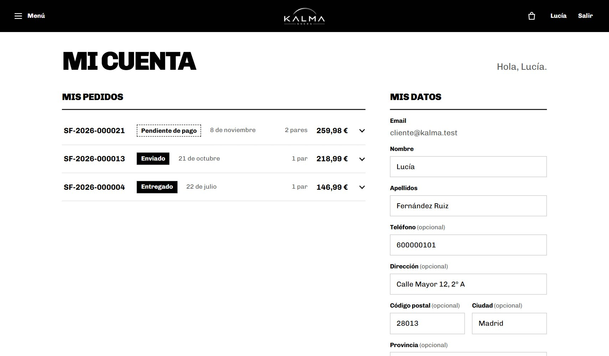
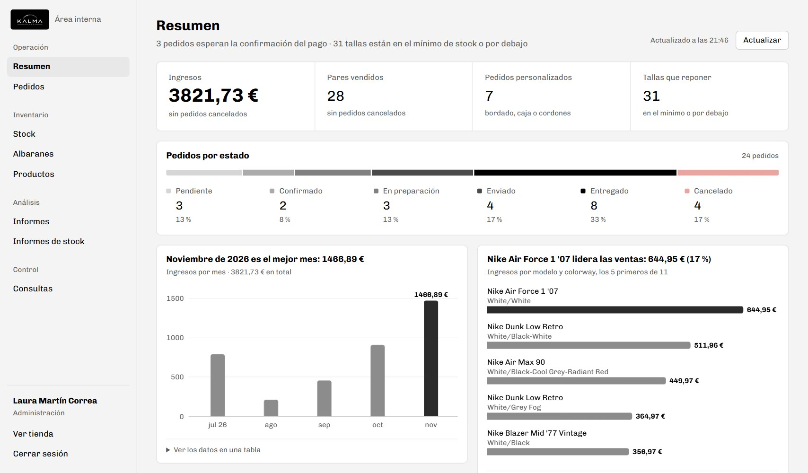
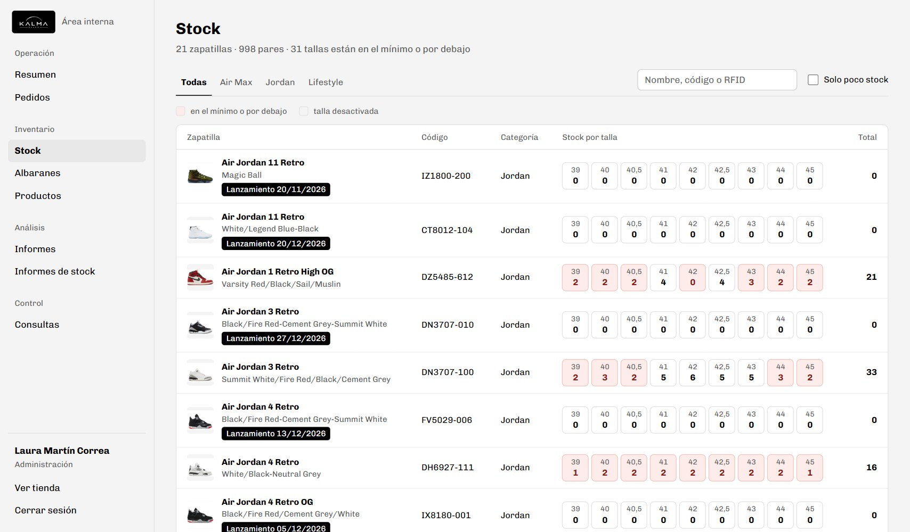
| Elemento | Datos de demostración (ficticios) |
|---|---|
| Usuarios | 16 cuentas: 1 de administración, 2 de almacén y 13 de clientes (una desactivada). |
| Catálogo | 21 zapatillas Nike con códigos reales: 14 a la venta de 12 modelos y 7 lanzamientos anunciados. |
| Tallas | 189 variantes (9 tallas por zapatilla), cada una con su stock, su mínimo y su etiqueta RFID. |
| Personalización | 8 opciones, una desactivada (la caja de madera grabada). |
| Pedidos | 24 pedidos en los seis estados (3 pendientes, 2 confirmados, 3 en preparación, 4 enviados, 8 entregados y 4 cancelados); 7 personalizados. |
| Perfil | Cuenta (contraseña Kalma2026!) | Operaciones |
|---|---|---|
| Administración | admin@kalma.test | Todo: productos, albaranes, confirmar y cancelar pedidos, informes, auditoría, exportación y consultas. |
| Almacén | almacen@kalma.test | Stock, consulta de albaranes, logística de pedidos e informes de stock. |
| Cliente | cliente@kalma.test | Su perfil y sus pedidos. |
La colección postman/KALMA-SNKRS.postman_collection.json prueba toda la API, con respuestas correctas,
errores y usuarios sin permiso. Cada carpeta abre y cierra su propia sesión y un script de la colección añade el token
CSRF. Cada petición lleva sus comprobaciones (los resultados esperados). La colección se ejecutó con
newman 6.2.3 contra una pila Docker aislada, con la base de datos recién creada desde el esquema y las semillas, por HTTPS
y con el código del commit d296743. Los resultados obtenidos, prueba a prueba, están en
docs/pruebas/resultados-coleccion.md.
| Pruebas (peticiones de la colección) | 176 | Peticiones HTTP (con las de los scripts) | 294 |
| Comprobaciones | 375 | Comprobaciones fallidas | 0 |
| Pruebas que esperan un error | 70 | Duración · respuesta media | 20,7 s · 17 ms |
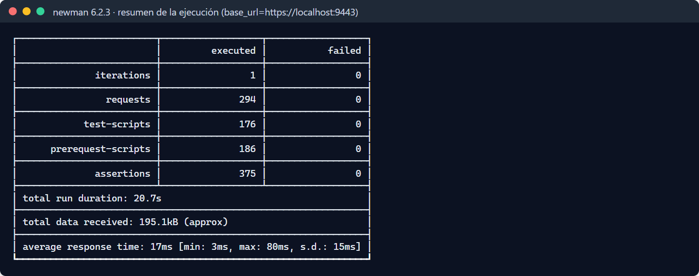
| Código | Qué se comprueba | Pruebas |
|---|---|---|
400 | Datos no válidos: registro, filtros, pedido con cantidad incorrecta, bordado en un modelo que no lo admite, opción desactivada, alta y edición de productos, albarán con errores, ajustes de stock, fechas de informes, auditoría y exportación. | 26 |
401 | Rutas privadas sin sesión y login con contraseña incorrecta. | 7 |
403 | Token CSRF falso; la clienta en rutas de gestión; el almacén al confirmar pagos, cancelar, exportar, ver el resumen, cargar o aceptar albaranes y revisar informes. | 14 |
404 | Rutas, productos, pedidos, tallas, informes y consultas inexistentes; pedido de otro cliente (IDOR). | 11 |
405 | Método no permitido en una ruta existente. | 1 |
409 | Email o código repetido, pedido sin stock, cancelar un pedido enviado o ya cancelado, saltarse estados, código de seguimiento de otro pedido, stock negativo y albarán repetido sin aceptar. | 10 |
429 | Sexto intento de login con la misma cuenta desde la misma IP. | 1 |
| Prueba | Nº en la colección |
|---|---|
| Registro, login, acceso denegado y operación autorizada de un empleado | 7, 13, 9, 83 |
| Pedido con varias líneas: importe, descuento de stock y persistencia | 36, 37 |
| Cantidad no válida, pedido sin stock y pedido de otro cliente | 32, 33, 31 |
| Búsqueda filtrada, informe y exportación | 19, 109, 122 |
| Cancelación con reposición de stock y cancelación no permitida | 39, 38, 40 |
| Seguridad: CSRF, fuerza bruta y auditoría sin datos sensibles | 25, 26, 120 |
Casos preparados en los datos de demostración: SF-2026-000021 es un pedido pendiente y personalizado
que la clienta puede cancelar (el stock se repone); SF-2026-000013 está enviado y cancelarlo da
409; SF-2026-000022 es de otro cliente y la clienta no lo puede ver (404).
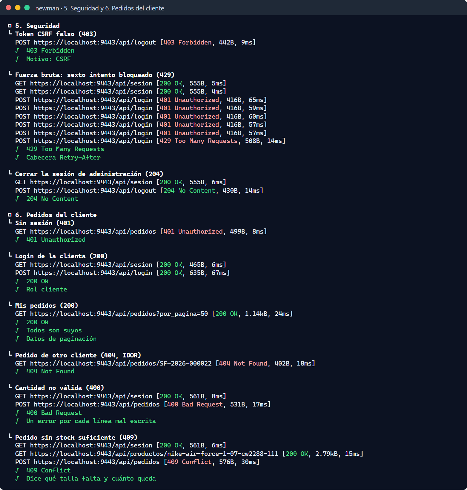
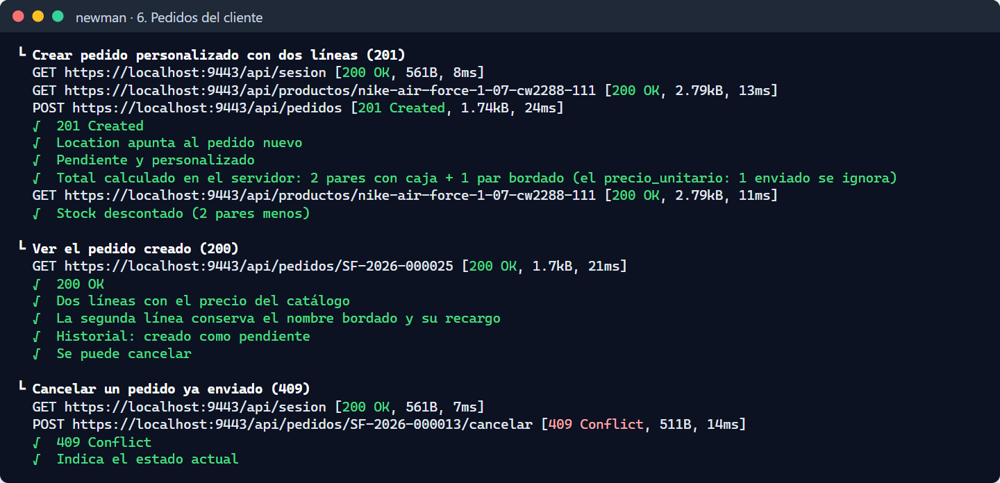
| Servicio | Configuración y función |
|---|---|
| proxy | Imagen propia basada en nginx:1.27-alpine con los estáticos copiados. Publica HTTP y HTTPS (80 y 443, o los puertos de KALMA_PUERTO_HTTP y KALMA_PUERTO_HTTPS), termina TLS, sirve CSS, JavaScript e imágenes y reenvía el resto a app:80. Monta los certificados en solo lectura. |
| app | Imagen propia en dos etapas sobre php:8.3-apache. Ejecuta la aplicación y no publica ningún puerto. Su healthcheck consulta /health. |
| db | postgres:17. Guarda los datos en el volumen datos_postgres y solo es accesible desde la red interna. Su healthcheck usa pg_isready por TCP. |
| Red | Servicios | Finalidad |
|---|---|---|
| front | proxy y app | Comunicación entre el proxy y la aplicación. |
| back | app y db | Red internal: true: PostgreSQL no sale a Internet y el proxy no llega a la base de datos. |
Los servicios arrancan en orden gracias a depends_on con condition: service_healthy: primero la base de
datos, después la aplicación y por último el proxy. Los datos se conservan al recrear los contenedores o ejecutar
docker compose down; en cambio, docker compose down -v borra el volumen y la base de datos se vuelve a crear
desde los scripts iniciales, por lo que no se usa como procedimiento normal de actualización.
Las imágenes llevan la etiqueta APP_VERSION (por defecto local), lo que permite saber qué versión está
desplegada y volver a la anterior. Nginx recibe la dirección pública (KALMA_ORIGEN) mediante una plantilla con
variables de entorno.
compose.yaml (despliegue) | compose.dev.yaml (desarrollo) | |
|---|---|---|
| Puertos | 80 y 443, o los de .env | Solo en el propio equipo: 8081 (redirige) y 8443 |
| Código | Copiado en la imagen | app/, config/ y public/ montados: los cambios se ven al recargar |
| Errores y límites | Sin detalles; límites de producción | Motivo de los errores 500 y límites por IP más altos para repetir las pruebas |
| Volumen | datos_postgres del proyecto | Volumen externo con nombre fijo, para no arrancar por error con una base vacía |
La aplicación se desplegó en el servidor común del aula para abrirla desde otro equipo por HTTPS, con Nginx como punto de entrada, PHP con Apache para la aplicación y PostgreSQL para los datos.
| Dato | Valor |
|---|---|
| Sistema operativo | Ubuntu 26.04.1 LTS (kernel 7.0.0-43-generic, x86_64) |
| Equipo y usuario | 2dodaw, cuenta de despliegue kalmasnkrs (sin permisos de administrador) |
| Red | Cable (enp2s0), IPv4 192.168.137.210 por DHCP |
| Versión desplegada | Commit 6a6a53f, con la carpeta en HEAD separado y las imágenes etiquetadas con esa versión |
| Acceso | https://192.168.137.210:8443 (HTTP en 8080, que redirige a HTTPS) |
# 1. Comprobaciones previas: usuario, IP, puertos ocupados y versión de Docker whoami && ip -br -4 addr && ss -ltn && docker compose version # 2. Obtener y fijar la versión git clone --branch davidRojas https://github.com/DaRoCo7/KALMA-SNKRS-PHP-version.git cd KALMA-SNKRS-PHP-version && git switch --detach 6a6a53f && git log -1 --oneline # 3. Variables privadas: .env con permisos 600 (la contraseña no sale del servidor) umask 077 && cp .env.example .env && chmod 600 .env # DB_NAME, DB_USER, DB_PASSWORD y, por el Apache que ocupa el 80/443: # KALMA_PUERTO_HTTP=8080 KALMA_PUERTO_HTTPS=8443 KALMA_ORIGEN=https://192.168.137.210:8443 # 4. Certificado en docker/nginx/certs/ con la IP del servidor en el SAN # 5. Construir, aplicar migraciones, arrancar y comprobar export APP_VERSION=6a6a53f bash scripts/deploy.sh produccion docker compose ps KALMA_URL=https://localhost:8443 bash scripts/comprobar.sh
deploy.sh construye las imágenes, espera a que PostgreSQL acepte conexiones, aplica las migraciones pendientes,
arranca la aplicación y el proxy y consulta /health por HTTPS. Con un volumen nuevo se cargan el esquema y las
semillas; en los despliegues posteriores el volumen se conserva.
La guía preparada para el aula (docs/KALMA_Despliegue_Aula.md) asumía los puertos 80 y 443, el nombre
kalma.local y permisos de administrador. El servidor común no cumplía esas condiciones y el despliegue se adaptó así:
KALMA_PUERTO_HTTP, KALMA_PUERTO_HTTPS y KALMA_ORIGEN, sin tocar compose.yaml (commit 6a6a53f)./etc/hosts ni instalar mkcert, así que el acceso es por la IP
con un certificado propio que incluye esa IP. Como los equipos cliente no confían en esa autoridad, el navegador muestra
el aviso «No es seguro»: el cifrado funciona, pero la identidad del servidor no está avalada por una CA de confianza.KALMA_ORIGEN.Después del despliegue, los modos de producción de deploy.sh, backup.sh y restaurar.sh quedaron
bloqueados en el repositorio hasta definir el entorno definitivo, para que nadie los relance por error sobre el servidor sin
revisar antes el volumen y la configuración.
Las comprobaciones se hicieron el 19 de noviembre de 2026 desde un segundo equipo conectado a la misma red que el servidor.
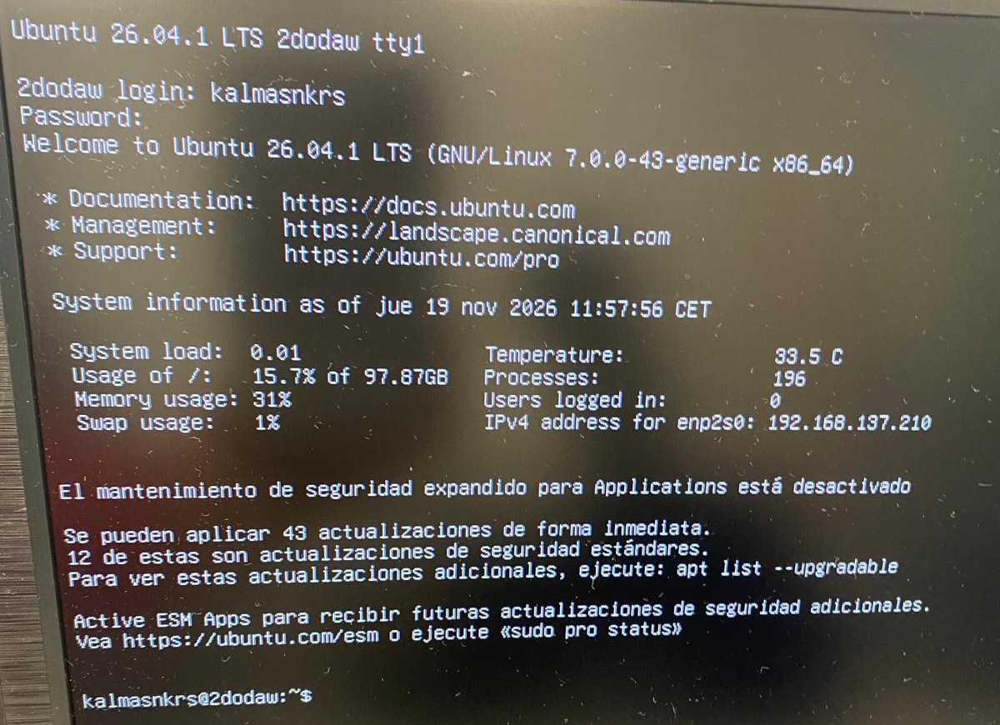
kalmasnkrs e IP 192.168.137.210.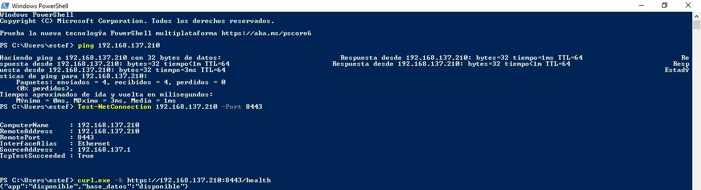
TcpTestSucceeded: True) y /health con la aplicación y la base de datos disponibles.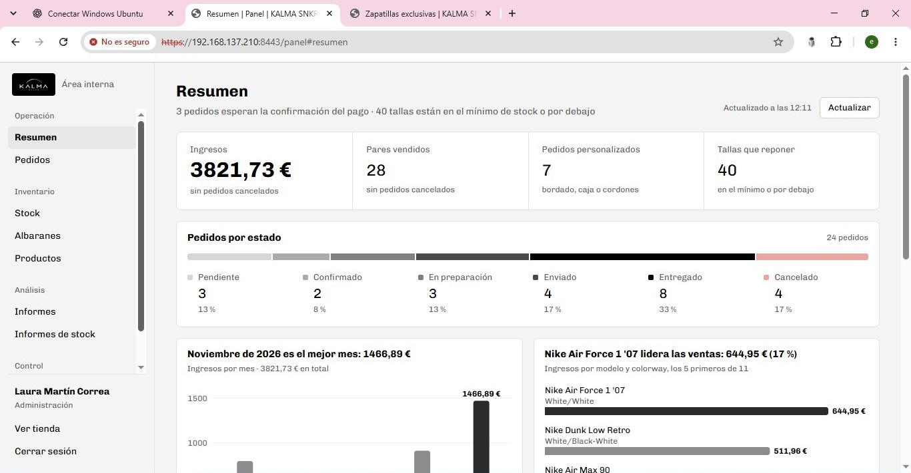
https://192.168.137.210:8443/panel, con los 24 pedidos de demostración.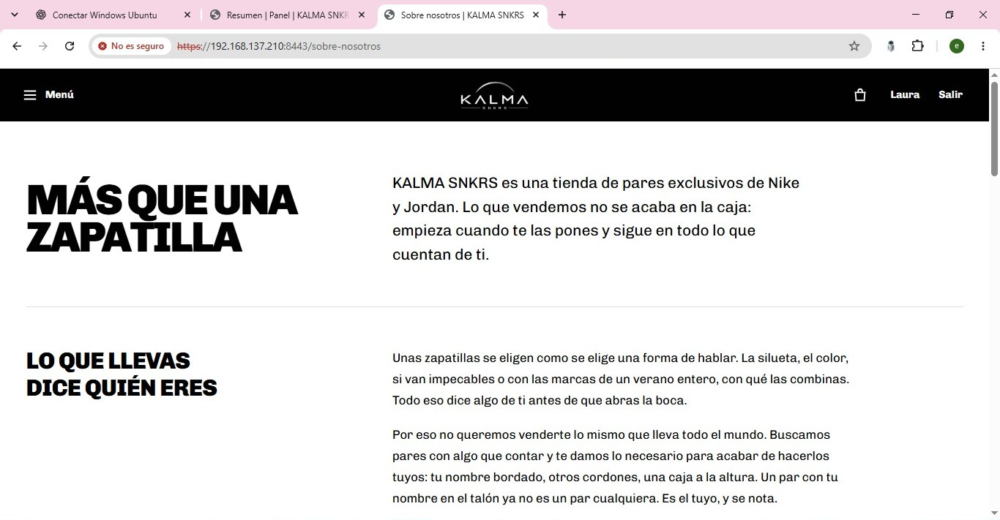
Nginx escucha en HTTP solo para redirigir: responde 301 hacia KALMA_ORIGEN conservando la ruta y los
parámetros. Por ejemplo, http://localhost:9080/catalogo?talla=42 redirige a https://localhost:9443/catalogo?talla=42
(comprobado en la pila de pruebas). En HTTPS termina la conexión TLS (versiones 1.2 y 1.3, nombres kalma.local y
localhost), entrega directamente CSS, JavaScript, imágenes y fuentes con caché de 7 días y reenvía el resto a app:80.
X-Real-IP, X-Forwarded-For y X-Forwarded-Proto: la aplicación usa la IP real para los límites
y la auditoría (solo la acepta si la petición llega desde una red privada, la del proxy) y marca la cookie como Secure cuando el origen es HTTPS.429 en el mismo formato JSON de error de la API, con Retry-After.docker/nginx/certs/ y no se suben al repositorio. En local se crean con mkcert
(de confianza en el propio equipo) o con OpenSSL (autofirmado). Para un dominio definitivo hay que usar un certificado
emitido por una autoridad en la que confíen los clientes.Para entrar desde otro equipo, ese equipo tiene que llegar a la IP del servidor y al puerto HTTPS publicado (lo que
se comprobó con Test-NetConnection). Si se usa un nombre como kalma.local, debe resolverse a la IP real
del servidor (DNS del aula o archivo hosts) y el cliente debe confiar en el certificado público de la autoridad que
firmó el del servidor; la clave privada de esa autoridad nunca sale del equipo donde se creó.
Los scripts hacen copias de PostgreSQL, comprueban su integridad y recuperan los datos en una base aislada.
scripts/backup.sh crea una carpeta con la fecha y la hora (backups/AAAAMMDD-HHMM/) con el volcado
(pg_dump -Fc), su índice, la configuración versionada del commit, el identificador del commit, las imágenes en uso y
un manifiesto SHA256SUMS. La copia solo se da por completa cuando termina y se crea el indicador .completa, y
se conservan las cinco últimas copias completas. El script se niega a copiar si hay cambios sin confirmar en Git, para
que la configuración guardada corresponda exactamente al commit.
bash scripts/backup.sh desarrollo cd backups/AAAAMMDD-HHMM && sha256sum -c SHA256SUMS
scripts/instalar-cron.sh comprueba que cron esté activo y crea /etc/cron.d/kalma-backup para ejecutar la copia
cada día a las 03:00 con la ruta absoluta del proyecto y el usuario que puede usar Docker; la salida queda en
backups/cron.log. En el ensayo en una máquina virtual la copia se ejecutó desde cron y la restauración aislada
recuperó el primer pedido con la misma huella. En el servidor común la cuenta de despliegue no tiene sudo, así que
escribir en /etc/cron.d requiere al responsable del servidor o usar el crontab del propio usuario.
scripts/restaurar.sh AAAAMMDD-HHMM comprueba que la copia esté marcada como completa, que el volcado exista y
que el manifiesto SHA-256 sea correcto, y restaura en una base de ensayo independiente
(kalma_restauracion_AAAAMMDD_HHMM) sin tocar la principal. Si la restauración falla, elimina solo la base de ensayo
que creó esa ejecución. La restauración directa sobre producción está bloqueada.
En el entorno de desarrollo se creó la copia 20261119-0403, se verificaron los hashes de los archivos y se
restauró en kalma_restauracion_20261119_0403. Los recuentos de las 17 tablas coincidieron con los de la base original:
| Tabla | Filas | Tabla | Filas | Tabla | Filas |
|---|---|---|---|---|---|
| auditoria | 121 | limites_peticiones | 2 | pedidos | 24 |
| categorias | 3 | linea_personalizacion | 12 | productos | 21 |
| clientes | 13 | lineas_pedido | 31 | roles | 3 |
| colores | 6 | marcas | 1 | usuarios | 16 |
| consultas | 3 | movimientos_stock | 160 | variantes | 189 |
| historial_estados_pedido | 82 | opciones_personalizacion | 8 |
El archivo .env y las claves TLS no forman parte de la configuración guardada con la copia: se aprovisionan por
separado y deben protegerse con un procedimiento privado.
| Incidencia | Causa | Solución |
|---|---|---|
| Tras activar HTTPS, el proxy se reiniciaba en bucle y la web no cargaba | Faltaban el certificado y la clave en docker/nginx/certs/, carpeta que no se sube a Git | Crear el certificado con mkcert u OpenSSL; el README lo incluye como paso de la instalación. |
En Windows, docker compose up --build fallaba con «additional privileges requested» | El constructor compara rutas distinguiendo mayúsculas y la terminal se abría en c:\ en minúscula | Lanzar la orden desde C:\ con la letra en mayúscula. |
El login fallaba en Postman con http://localhost:8081 | Nginx responde 301 a HTTPS y el cliente repite el POST como GET | Usar siempre la dirección https:// en el entorno de Postman. |
| Error de socket al cargar las semillas durante el despliegue | Las migraciones se lanzaban antes de que PostgreSQL aceptara conexiones TCP | deploy.sh espera al healthcheck de la base de datos antes de aplicarlas (commit b91ae03). |
| El 80 y el 443 estaban ocupados en el servidor común | Un Apache del sistema, en un servidor compartido | Puertos y origen configurables desde .env; KALMA en 8080 y 8443 (commit 6a6a53f). |
No se podían editar /etc/hosts, instalar mkcert ni escribir en /etc/cron.d | La cuenta de despliegue no tiene sudo | Acceso por IP con un certificado que la incluye; el cron queda pendiente del responsable del servidor. |
| La comprobación de salud fallaba en Windows | comprobar.sh usaba Python para leer el JSON de /health | El JSON se lee con PHP dentro del contenedor app (commit 749e480). |
| Cualquiera podía bloquear durante 15 minutos la cuenta de otra persona | El límite de login contaba los intentos de la cuenta desde cualquier IP | Bloqueo por cuenta e IP en una sola sentencia atómica (commit 814c3a8). |
| Riesgo de arrancar desarrollo con una base de datos vacía | Compose crea un volumen nuevo si cambia el nombre del proyecto | Volumen externo con nombre fijo, que se crea una vez (commit d11fd6c). |
La comprobación se hace en tres niveles con scripts/comprobar.sh: la portada responde por HTTPS con 200,
/health informa de que la aplicación y la base de datos están disponibles y PostgreSQL ejecuta SELECT 1.
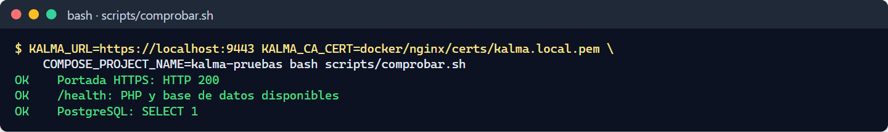
comprobar.sh sobre la pila de pruebas: las tres comprobaciones correctas.| Comprobación | Comando |
|---|---|
| Estado de los servicios | docker compose ps |
| Logs del proxy, la aplicación o la BD | docker compose logs --tail=60 proxy (o app, db) |
| Validar la configuración de Compose | docker compose config --quiet |
| Disponibilidad de PostgreSQL | docker compose exec -T db pg_isready |
| Consola SQL | docker compose exec db psql -U "$DB_USER" -d "$DB_NAME" |
| Comprobación completa | bash scripts/comprobar.sh |
| Problema | Qué revisar |
|---|---|
| El proxy no arranca | Puertos ocupados, rutas de los certificados y docker compose logs proxy. |
| La aplicación no conecta con PostgreSQL | Estado de db, variables de conexión de .env y la red interna. |
| HTTPS no funciona desde el cliente | IP, resolución del nombre, acceso al puerto HTTPS y confianza del navegador en el certificado. |
429 Too Many Requests | Esperar un minuto (Nginx) o 15 minutos (login de una cuenta). |
| Falla una copia automática | Cron, permisos del usuario, ruta absoluta del proyecto, Docker y backups/cron.log. |
| La restauración no termina | El indicador .completa, el volcado y el manifiesto SHA-256. |
KALMA SNKRS reúne las funciones principales de una tienda online de zapatillas: catálogo, cuentas, pedidos con personalización, control de inventario y gestión interna con informes y auditoría. Las reglas de negocio están en el servidor, los permisos se comprueban en cada petición y PostgreSQL protege la consistencia con restricciones y transacciones.
La infraestructura separa el proxy, la aplicación y la base de datos en servicios Docker independientes, con la base de datos aislada en una red interna. La colección de pruebas cubre 176 casos, con 70 errores esperados, y pasa sin fallos sobre una base de datos recién creada. La aplicación se desplegó en el servidor común y se comprobó desde un segundo equipo por HTTPS; las copias se verificaron con sus hashes y con una restauración aislada.
Resumen del README.md, que es la referencia completa. Requisitos: Docker con Compose, Git y OpenSSL o mkcert.
# 1. Variables de entorno (la plantilla no lleva contraseñas)
cp .env.example .env # rellenar DB_PASSWORD
# 2. Certificado HTTPS (no se sube al repositorio)
mkdir -p docker/nginx/certs
MSYS_NO_PATHCONV=1 openssl req -x509 -newkey rsa:2048 -nodes -days 365 -subj "/CN=kalma.local" \
-addext "subjectAltName=DNS:kalma.local,DNS:localhost,IP:127.0.0.1" \
-keyout docker/nginx/certs/kalma.local-key.pem -out docker/nginx/certs/kalma.local.pem
# 3. Arrancar y comprobar
docker compose up -d --build
docker compose ps # proxy, app y db en "healthy"
curl -k https://localhost/health # {"app":"disponible","base_datos":"disponible"}
# Modo desarrollo (https://localhost:8443), la primera vez crear el volumen
docker volume create kalma-snkrs-php_datos_postgres_nuevo
docker compose -f compose.yaml -f compose.dev.yaml up -d --build
# Pruebas de la API
npx newman run postman/KALMA-SNKRS.postman_collection.json \
-e postman/KALMA-SNKRS.postman_environment.json --insecure
Variable de .env | Uso |
|---|---|
DB_NAME, DB_USER, DB_PASSWORD | Base de datos, usuario y contraseña de PostgreSQL (obligatorias). |
KALMA_PUERTO_HTTP, KALMA_PUERTO_HTTPS | Puertos publicados si el 80 o el 443 están ocupados. |
KALMA_ORIGEN | Dirección pública a la que Nginx redirige el HTTP. |